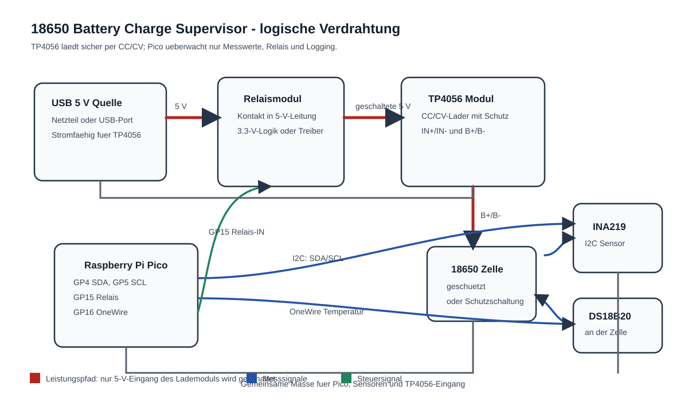
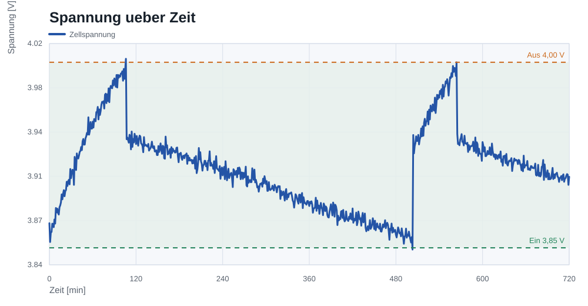
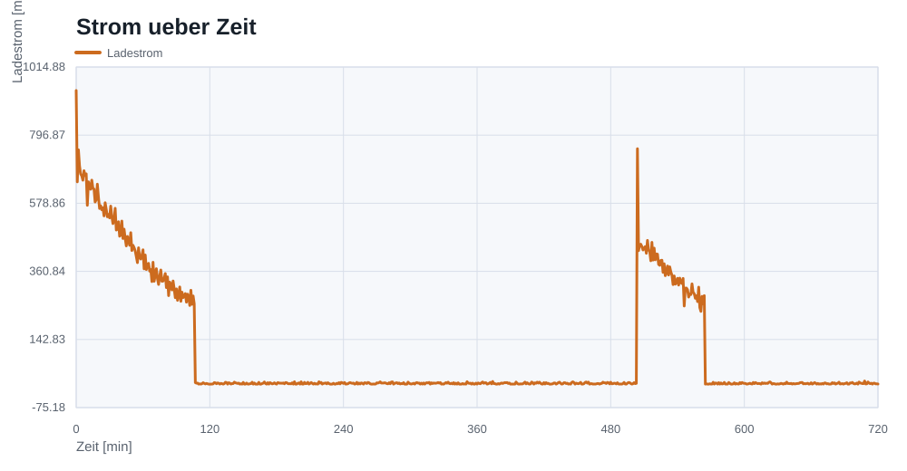
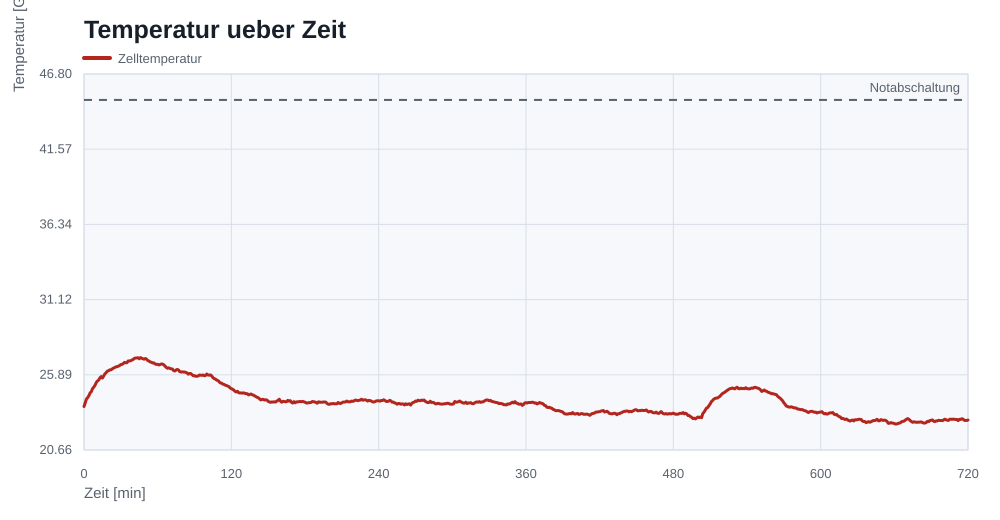
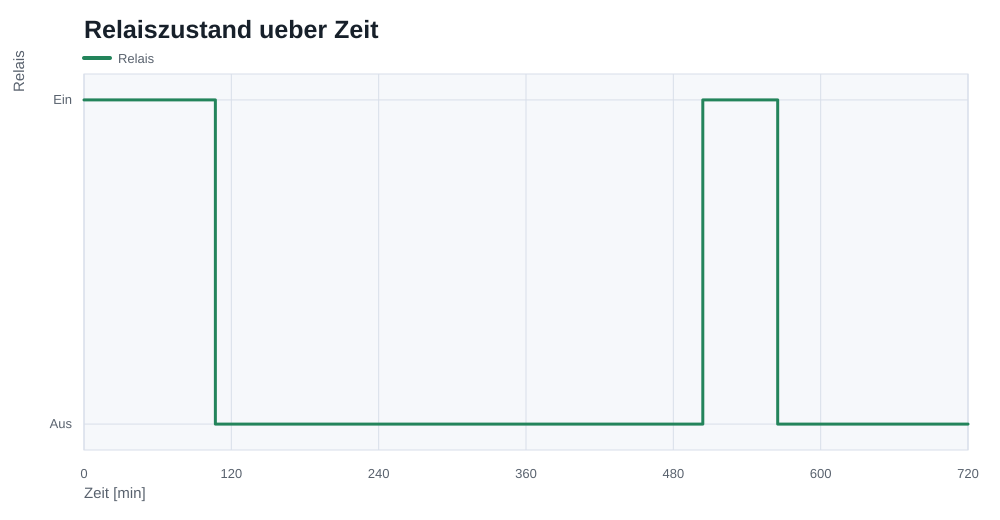
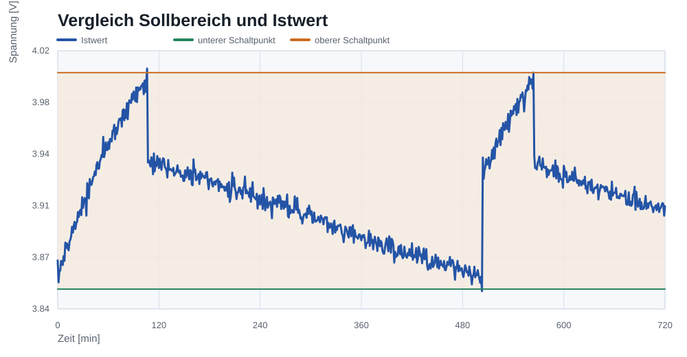

Laden ein
Unterer Hysteresepunkt fuer die Freigabe des TP4056.
Raspberry Pi Pico · MicroPython · Regelungstechnik
Ein uebergeordneter Lade-Waechter fuer eine geschuetzte 18650-Zelle: Der TP4056 laedt sicher per CC/CV, der Pico misst, entscheidet, schaltet die 5-V-Freigabe und dokumentiert den Verlauf.
Motivation
Li-Ion-Zellen verlangen eine kontrollierte CC/CV-Ladekurve. Dieses Projekt zeigt deshalb bewusst keine selbstgebaute Ladeelektronik, sondern eine sichere Aufgabenverteilung: Das fertige TP4056-Modul laedt, der Pico ueberwacht die Umgebung und dokumentiert das Verhalten.
Genau diese Grenze macht das Projekt fuer eine Bewerbung spannend: Es verbindet Regelungstechnik, Embedded-Software, Sensorik, Datenanalyse und Sicherheitsdenken in einem kompakten Aufbau.
Regelungstechnik
Die Stellgroesse ist binaer: TP4056-Eingang freigeben oder trennen. Ein PID-Regler waere fachlich falsch, weil der Pico den Ladestrom nicht kontinuierlich fuehren soll.
Unterer Hysteresepunkt fuer die Freigabe des TP4056.
Oberer Schaltpunkt, bewusst unterhalb der typischen Ladeschlussspannung.
Temperaturfehler wird gelatcht, das Relais bleibt abgeschaltet.
Hardware
Fuehrt die Messschleife aus, entscheidet per Hysterese und schreibt CSV-Logs.
Uebernimmt den eigentlichen Li-Ion-Ladevorgang mit CC/CV-Verhalten.
Liefert Zellspannung und Ladestrom per I2C fuer Logging und Regelentscheidung.
Ueberwacht die Zelltemperatur direkt am Akkugehaeuse.
Schaltplan
Der wichtigste Sicherheitsaspekt ist die Position des Relais: Es trennt die Versorgung des Lademoduls, nicht den Batteriezweig.

MicroPython-Code
Die Firmware misst Spannung, Strom und Temperatur, berechnet den Relaiszustand und schreibt jede Probe in eine CSV-Datei.
if relay_on and voltage_v >= CHARGE_OFF_V:
relay_on = False
elif not relay_on and voltage_v <= CHARGE_ON_V:
relay_on = True
if temperature_c >= TEMP_CUTOFF_C:
relay_on = False
fault_latched = TrueMessdaten und Plots
Die Daten bilden einen plausiblen TP4056-Ladeverlauf mit Tapering, Temperaturtraegheit und Relais-Hysterese ab.





Sicherheit
Fazit
Das Projekt zeigt einen vollstaendigen Weg von Embedded-Firmware ueber Hardware-Dokumentation bis zur Datenauswertung. Die technische Entscheidung fuer einen Zweipunktregler ist einfach, nachvollziehbar und passend zur binaeren Stellgroesse.
Durch die bewusste Abgrenzung zum eigentlichen Li-Ion-Laden bleibt die Loesung fachlich sauber: Der Pico beaufsichtigt, der TP4056 laedt.